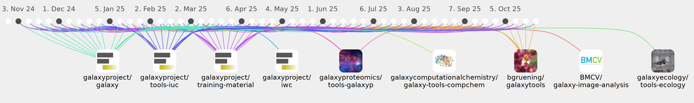

bgruening

Commits all-time: 13181
Commits last year: 768

(321)
- f04670e
- ff56f02
- 430cd92
- b548a50
- d6846cd
- 7a50275
- b2b3ce2
- 2df0344
- cde4cce
- b4044d2
- 881c4f0
- 112af25
- c0d7c69
- 20fd266
- f2b3986
- b3c4dca
- a21363c
- acac4f9
- 062d683
- 04b7d34
- 0f93550
- fdaa460
- d9f541d
- 62edff3
- 327834d
- de98c17
- 5c9fd72
- 2ae2ddb
- 7f250f4
- ccc7857
- 2672414
- bfeaaf8
- 688b851
- cb9e88d
- 9c3372b
- 1c7abf3
- bb83e01
- e567b31
- 73ebd55
- 17bf763
- e7ec0dd
- c45c312
- 20c6e31
- 9d6123a
- 06d653e
- 11a7415
- 099f08c
- f02f375
- 41b2cdf
- 64d29a8
- 8341270
- 40350c8
- 0b67127
- 8eca6c0
- 13a1044
- 9ce4997
- 0930535
- 71ee181
- f1fde73
- a5ae2f8
- 0ec1ca5
- 1897a3f
- e953b3b
- bd71427
- 0c588c1
- 14178ea
- e9c80d2
- 865bc9a
- 7199898
- 6419b68
- 08ce25c
- fa72d86
- 2d69e62
- 20a4ded
- c4c483b
- d127fc2
- 697c084
- f12bb78
- 035d59f
- 23afccf
- 09b98db
- 8b3e6e5
- 55c61a5
- 611b90f
- 0a507d9
- c420596
- 68607e0
- 3803ea0
- 32f1099
- b9d360e
- 2b9a07e
- 5c64462
- 7622619
- c5721c9
- 85ece54
- 425535e
- b8bb585
- 708071a
- 607e1d0
- 8e0168d
- c829290
- ed98c90
- 61b465d
- cdd582a
- b2afe48
- 56fd82d
- 814017d
- 2cc7781
- c62791a
- 24dc637
- 85ea746
- f79f470
- c91b1ba
- 56eb8ea
- ff0a9b6
- 9a1b668
- f76d199
- e554cfd
- b9c33a8
- 483a133
- 0daaffa
- 07109d5
- b326141
- 49e7596
- 7bac5b8
- e5d0d8e
- 4adb190
- 06cd9c7
- e713fc7
- c508c3a
- 0e305d2
- b8c8ce0
- 4120f06
- 1a566c8
- 03d00ec
- f1ec0d8
- cf70bdb
- 8b3c2a9
- 09c8e25
- 8021078
- bf26626
- d80cc18
- a876dd4
- e84f1b2
- 793163e
- 3f69d66
- 496b4b5
- a0769bb
- 20e1410
- f1dbc91
- b0db941
- 1419784
- daf5666
- 8f1b87d
- b09d11c
- 89ee0af
- fee066d
- 3b5fcf4
- 467268e
- 54378f7
- 365c6f6
- 6f5af0d
- 8672b5b
- 2199079
- bd98b70
- 46fdfda
- 7c74921
- 69888af
- 35b4a06
- 6fa391b
- d2787f6
- 48700fe
- 97f2302
- d5e1741
- 2cffdba
- bb37578
- 4d109eb
- ee5d87e
- bbf307e
- 85b61b0
- b4d8749
- fe43201
- 5261d1c
- 62876fc
- 0fe9283
- e5971e3
- 10a55aa
- 1c15762
- cd2cb7e
- 4b34a4e
- 15f3ce6
- e51fbc3
- d966ed4
- 16d60f6
- 5875d08
- f4e4544
- 76c1a28
- 344ee74
- 6400a25
- 803c484
- a922729
- 4d12d8c
- 9fdf4ad
- 4fa8661
- abb1519
- 5b22254
- 1696bfc
- 3e15f64
- d97b1b9
- 34580fb
- 77814d7
- c63b1bf
- d0b3d69
- 2278a16
- e5a0f25
- 76bd257
- 848922d
- 193710b
- aed2557
- 30694c1
- 2c96150
- 51b25d2
- 67c36c3
- a1bd697
- 3214ce4
- d6e50fa
- cb5c00e
- 7dba70c
- 5482aa8
- 6f9ce1a
- 4abfaf6
- fef10e0
- 722ac22
- 2a41178
- 9fa21e6
- a266018
- e740dbd
- 6eb8fc7
- a5652d3
- ee22f55
- 51ad35c
- 0003d8c
- 28995be
- b4cc6bf
- dec3677
- bb23455
- 54a29e1
- 6e38d3e
- 940b823
- 6935ad9
- 28236fa
- 178914e
- ed6d188
- 4079726
- 5f2ed04
- 69cdfd8
- cfb24e0
- f6efda2
- a6bd86a
- 810dbb9
- 15c654c
- 7352c3e
- 0c1c0e2
- 7ea9f72
- f2eaec5
- 43b5bef
- f25e203
- 69a2f21
- dd3f70e
- f4e20ff
- 682867d
- decf6da
- 31b55c9
- f040316
- bb73889
- 69b6639
- 4b4938c
- f322ae4
- 7ee4aca
- 6839126
- 73e5758
- 8423f6d
- c25e877
- 3563fef
- 431830f
- d35c7d4
- db7d806
- da3b71e
- 201733b
- 229cd59
- 15165d6
- a3e4ec6
- d4b9696
- 747e3f7
- 95eb601
- 741abdd
- 5aa82b8
- 20f169c
- 157d1ec
- f91494b
- 4a7a32f
- aad431e
- bf3bb5d
- 366a02d
- dd2275c
- f727100
- 3397035
- 93f7dba
- f39c5e3
- 30797e2
- 15e330d
- 7bf2bea
- f434c09
- d4321c7
- 6244b9d
- 8a310fc
- ebefa8a
- 78ebd39
- 4dd56b9
- c43c6a1
- 63860b5
(270)
- ef462bd
- bfb40f5
- b0db256
- 4c9cea7
- f4b92a1
- 7919849
- 1152bf8
- ef2748b
- 24a3de2
- 397b7dd
- 56a7d2e
- 0e8acd5
- b74151a
- 362aab1
- 1d338c8
- b1fc895
- 207b951
- d84e781
- e9c31b6
- c319d30
- 158cbe6
- 7e71748
- a8dcca6
- 67d7c88
- 05bbcef
- fbcf2c2
- b373a2f
- ef2ec75
- b4f2d60
- f0f303a
- 5d8f2df
- d29ede7
- ef93af6
- 46f2250
- 8934ca6
- 0d7ebcc
- b4cd66b
- abb12a2
- 5fa6955
- ba50439
- 2bd667a
- 5632b05
- 923a043
- a334633
- 9d33404
- 7ce31db
- 0c17f00
- 4c17152
- 1203bbe
- 8a72d2b
- 89f77d2
- 0a062c6
- cdd047f
- ead5c35
- 486a1b5
- fa44b9b
- 1fc8b27
- 14026e6
- 8f514dd
- 8341182
- 4c10d9d
- 954d234
- dc09489
- 673fb63
- 301fa06
- f7e3188
- a378d24
- fde1850
- bd4770b
- 76d6987
- a414cf3
- af3dc55
- d9bb50f
- 5cd2a04
- bc984ed
- 65231a4
- ce764af
- 11f69a8
- 4269140
- 0799a6e
- 54f9e44
- fa984f4
- cee1cef
- 2e15c7a
- 412b96a
- 9b52283
- 6f95990
- 646eed2
- 07c1973
- 32a0c09
- 60d48d3
- a826532
- 98f1d9f
- 837be0d
- 7d03468
- 7c99fe3
- 7a2d90f
- 51f2c5d
- 0a454c0
- f8fc276
- 7c6c5bb
- 7e4aafc
- d8902b3
- d783a08
- cb5bc03
- fa9ff97
- 888c48a
- 520456c
- c17e3fc
- c1ebed5
- 39028d7
- da29dc6
- a350368
- 542805a
- c49e358
- 31e3734
- f796d9f
- 4e9bba4
- 68c6afd
- b935261
- 23b11dc
- ada1131
- 26a5239
- 972f9d3
- 8912288
- 93aecbb
- ee572ff
- 0721b8c
- 14fe96f
- c48a945
- 209917d
- a734af7
- a2e9664
- ac2da24
- 5105a19
- 5322fb1
- 544d0d4
- f611b58
- 156a150
- 53a15db
- cc1d3b4
- 5ab50a3
- 0d14de5
- a8b492a
- b2469f8
- c4088df
- 082b42a
- deffcc3
- bf2895d
- d3c9b77
- 0f5bcd7
- 5892087
- d260fc5
- c71de27
- 7fadeeb
- f28a8a6
- 86c6b4b
- 0dd1fe6
- 6983184
- 01f8784
- 5d10c18
- 90806dd
- 8655795
- 2d08589
- 7606c06
- 4536530
- c07e743
- 15e3156
- 5060743
- 33b70cd
- fd94c37
- 57f3244
- 1107e07
- 754dab9
- 1f6c5ec
- ab56a4a
- 27f2eaa
- 5c2b3a5
- 23e7536
- c5038e2
- 0829757
- 1ca5c25
- 2f88996
- b05ff65
- ea531b6
- 7117ac1
- 3139fb6
- 9b1bfa8
- 53ff935
- c3901c4
- d86c9f9
- f7d5028
- 2e90b49
- 99ca587
- 205c0cf
- d7206b3
- 5c990fb
- 84571aa
- de664da
- 67c84a3
- d5683d2
- 0c44330
- cf05325
- d1b8e01
- dc95e15
- 50db4dd
- 6c667ac
- a8b815b
- ac427e1
- 316165a
- 13e3f0e
- aab96da
- c2d8904
- ae341fb
- 1a2368f
- 888dafb
- 17a8b23
- ba1cf48
- 0035245
- 15a3812
- 0d56c39
- 1fdb80a
- a93adf3
- cf61348
- 0fbbc15
- aaea1a6
- b092632
- 5d7a132
- e0b1161
- 7c45689
- cd6e455
- 7f941c4
- f345b72
- 5dabd1a
- d4735f4
- 88977ca
- 8981075
- 9cebfe3
- 3cfaa93
- 0c3b1bf
- 92cc2eb
- 50593d1
- 8d2552a
- 57d78d1
- 1f3e3ae
- ac63ea8
- 91aa75a
- f189d91
- b1a578f
- a30bf76
- 5a25d6c
- fa24015
- 8e5d2cb
- a52a26d
- 7de53b0
- 35d6cfb
- bc70055
- 385f565
- 4e08a2d
- 45e7346
- 6b2f4e6
- 2ef26cc
- a46ae28
- 156f329
- 22f9a39
- b67f43f
- caa5dff
- 260582b
- dbfc5d6
- f971843
(92)
- 3b46831
- 3a7c1e0
- 2da4362
- 8fb9112
- 5846f23
- 7cdafed
- cefdfdc
- 35d6a24
- 9204374
- f038722
- 58a5ecc
- 973836f
- dc39574
- aaa9d49
- b8612d1
- 7e231a4
- 3fd636f
- 78581c8
- 9e78632
- 5eb22d5
- 293dc13
- 6303638
- ae2dcf8
- b17cc0d
- 7790898
- 7334cd8
- 2a1da42
- f8ccc97
- 662df3c
- 25cbe53
- 62e9146
- 6cd506f
- 1ede2c0
- 6ac2834
- 1011b91
- 198f1f9
- ac4753a
- 9ec5898
- 9ab85a4
- 606e6fc
- 80167f5
- 23a0903
- 16e04b2
- b2463fb
- e6e09ea
- d3154a8
- c658843
- 2ffeb5d
- 285ab19
- 58df959
- 3f1539a
- e466e3b
- 1afbaf4
- 8553b76
- d38aa8a
- 26fee37
- 9685f84
- 739bcab
- 3216eed
- 743c8ac
- 07c6bd0
- b702945
- 8ab547f
- 6587450
- 46122c4
- ceb6267
- c6c9d43
- 6b52030
- 0bc8bb0
- daea630
- 8c26933
- 1180d1e
- 27ce587
- 1327c3b
- 6dfa486
- b712fb3
- 4d2ecbf
- bef0719
- 76bec04
- 0d8a75d
- fda9c89
- da44f6f
- 04ced19
- 1df4741
- 5a2351f
- 572c0b8
- d414f81
- 3f9f123
- 30ea7ff
- 13c64a3
- de7bbf6
- 7f19b9e
(69)
- 0c63d81
- c593be1
- 38ead39
- 0378f9a
- 4b15a2a
- 3f01d5b
- 3586026
- 2fa201e
- 65c55eb
- 2a29428
- 7713d21
- fb0cbdc
- a27582d
- 8294be7
- c267101
- badd292
- 22d66d3
- bedf19b
- 9bea32e
- d3a10de
- 8aec725
- dfeabbe
- ed07ddd
- 4c9383d
- caf3ea0
- 9be0736
- 46c35f3
- 54d98a1
- 5b95209
- 423922e
- 8d530ee
- b2340aa
- a08f04e
- 71ff613
- 39f1b26
- af684f2
- db4e08a
- 117a793
- c1f7e22
- 06ec81c
- d7e92da
- f9032e4
- 8c3dbe4
- fe32194
- fbb43b4
- 67d3f91
- 343b184
- 75a61d3
- 7bd9499
- d33a151
- 709f924
- e81e2b7
- cdf98a0
- 591e466
- b04a884
- 6621b69
- 7dc87ac
- 1805f26
- 7bf2dcd
- 38f1b6c
- 8bc99b7
- f986573
- f753f5b
- d942851
- d08ccb8
- 1a4dd5a
- e881bba
- b837bce
- 16eca5c
(10)
(3)
(1)
(1)
(1)